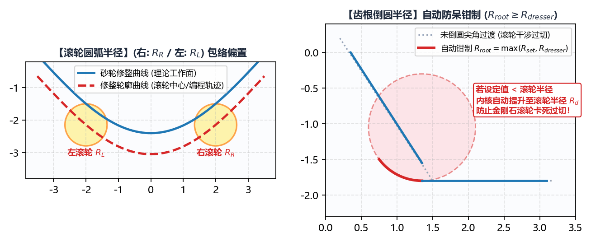
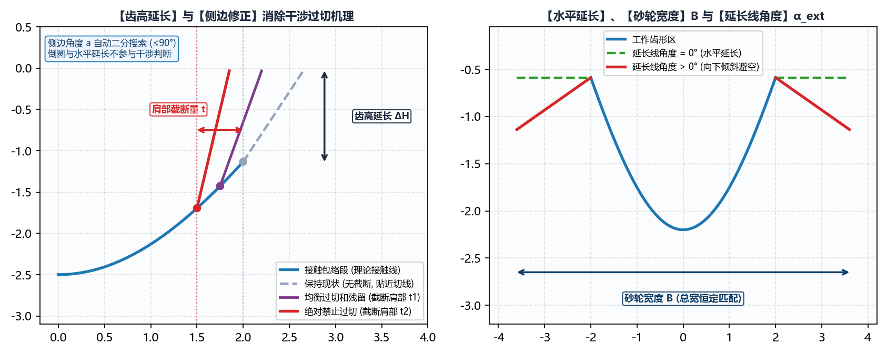
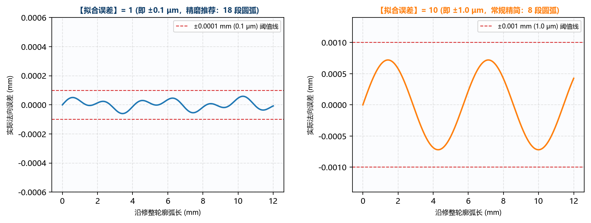

3.1 初始化配置
本节详解 高级参数 -> 初始化配置 中的滚轮补偿、采样密度、侧边修正、延长结构与圆弧拟合参数。
滚轮补偿与齿根倒圆

滚轮圆弧半径（mm）
- 工程定义：金刚石滚轮左右工作圆弧的实测刀尖半径（
R_dress,R、R_dress,L）； - 等距刀心偏置：在无干涉砂轮理论截形外侧分别按左右半径法向等距偏置，输出左右刀心修整轨迹；
- 特殊工况：
- 支持左右配置不同半径以适配非对称轮或双修整轮；
- 若机床自身启用硬件
G41/G42半径补偿，可将该值设为0。
齿根倒圆半径（mm）
- 工程定义：砂轮廓形底部与延长段之间的过渡圆角半径；
- 自动防过切钳制：开启
水平延长 = 是或输入齿根倒圆半径 > 0时，系统自动保证过渡圆弧不小于滚轮半径，防止滚轮啃伤工作齿侧：
点云密度与螺旋面角度
| 参数名称 | 默认值 | 推荐范围 | 工程说明 |
|---|---|---|---|
最终曲线点密度 |
600 |
500 ~ 2000 |
• 输出轨迹及拟合前的重采样点数 • 常规丝杠 500 ~ 600；复杂转子/花键推荐 1000 ~ 2000 |
螺旋面生成角度 |
90 |
30 ~ 180（°） |
• 求解接触线时工件螺旋面展角（±θ°） • 常规工况 60 ~ 90；超大导程或内旋风铣建议 90 ~ 120 |
齿高延长、侧边修正与水平延长

齿高延长高度（mm）
0：保持修整高度与理论法向齿高完全一致；0.1 ~ 0.5（推荐）：沿切线向上延伸修穿砂轮外缘，避免齿顶残留未修台阶。
侧边修正（消除滚道孔口干涉过切）
- 物理背景：大导程内螺纹或小安装角工况下，接触段两侧肩部旋转扫掠会造成工件齿顶（螺母孔口）严重过切；
- 求解机理：
- 从接触段肩部向内搜索截断量
t（严格钳制截断点不越过X = 0），并在截断点处自动优化出射侧边角（最大至90°垂直，绝不反向偏折）； - 虚拟磨削闭环仿真仅针对截断 + 齿高延长侧边进行干涉优化，
齿根倒圆与水平延长在修正完成后添加，不参与干涉判断； - 修正模式、截断量、侧边角度及优化前后最大过切/最大残留对比数据会自动写入
dxf_sumulator_normal_*.dxf与plot_sumulator_normal_*.html；
- 从接触段肩部向内搜索截断量
- 三种模式对比：
保持现状（默认）：不截断原曲线，仅搜索最贴近切线且过切最小的角度；均衡过切和残留（推荐）：截断肩部使每侧最大过切与最大残留大致相等（压缩max(过切, 残留)至极小）；绝对禁止过切：以最小截断量将过切压至容差内（≤ 0.5 μm），保留少量安全残留；
- 适用说明：二分仿真搜索约增加
1 ~ 3秒耗时；非对称转子齿形直接沿切线延长，不适用肩部截断。
水平延长与砂轮宽度
水平延长=是：一并修整砂轮左右端面；砂轮宽度（mm）：整片砂轮修整总宽，须大于当前齿槽开口宽度；延长线角度（°，默认0）：0°为纯水平直线；设为正角度（如5° ~ 65°）则按斜坡向外展开。
圆弧拟合与误差控制

拟合圆弧（否/是）：设为是时采用双切圆弧拟合输出平滑G2/G3指令，消除小直线段加减速振纹；- 平滑与大角度保护机制：
- 输出圆弧均经过首尾平滑连续处理，保证与
终点 + CR=R几何严格一致； - 单段圆弧圆心角上限
150°，超出时自动拆分为两段连续圆弧，防止部分控制系统整圆/大圆弧插补异常；
- 输出圆弧均经过首尾平滑连续处理，保证与
G3 ⇆ G2：全局互换生成代码中的G2与G3，适配不同刀架布局或左手/右手坐标系；拟合误差（单位：0.1 μm，即输入1=0.0001 mm）：- 软件按
max_error = 0.0001 × 拟合误差控制最大法向偏差； - 默认值
1（即0.1 μm，兼顾高精度与合理段数）；精密转子可设0.5~5（0.05 ~ 0.5 μm），普通丝杠需放宽至10（1.0 μm）以精简代码量； - 系统会对拟合采样点去重（
np.unique），并将真实统计的最大误差与平均误差直接写入拟合 DXF 左下角、HTML 副标题图例及 TXT 报告中。
- 软件按